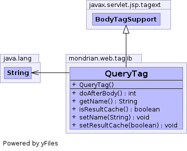

public class QueryTag extends javax.servlet.jsp.tagext.BodyTagSupport
QueryTag creates a ResultCache object and initializes
it with the MDX query. Example:
<query name="query1" resultCache="true">
select
{[Measures].[Unit Sales], [Measures].[Store Cost]} on columns,
CrossJoin(
{ [Promotion Media].[Radio],
[Promotion Media].[TV],
[Promotion Media].[Sunday Paper],
[Promotion Media].[Street Handout] },
[Product].[Drink].children) on rows
from Sales
where ([Time].[1997])
</query>
Attributes are
name,
resultCache.
| Constructor and Description |
|---|
QueryTag() |
| Modifier and Type | Method and Description |
|---|---|
int |
doAfterBody() |
String |
getName() |
boolean |
isResultCache() |
void |
setName(String newName)
Sets string attribute
name, which identifies this query
within its page. |
void |
setResultCache(boolean newResultCache)
Sets boolean attribute
resultCache; if true, the query is
parsed, executed, and converted to an XML document at most once. |
doEndTag, doInitBody, doStartTag, getBodyContent, getPreviousOut, release, setBodyContentfindAncestorWithClass, getId, getParent, getValue, getValues, removeValue, setId, setPageContext, setParent, setValuepublic QueryTag()
public int doAfterBody() throws javax.servlet.jsp.JspException
doAfterBody in interface javax.servlet.jsp.tagext.IterationTagdoAfterBody in class javax.servlet.jsp.tagext.BodyTagSupportjavax.servlet.jsp.JspExceptionpublic void setName(String newName)
name, which identifies this query
within its page. The <transform
query> attribute uses this.public void setResultCache(boolean newResultCache)
resultCache; if true, the query is
parsed, executed, and converted to an XML document at most once. This
improves performance and consistency, but the results may become out of
date. We also need a way to prevent the cache using too much memory.public boolean isResultCache()